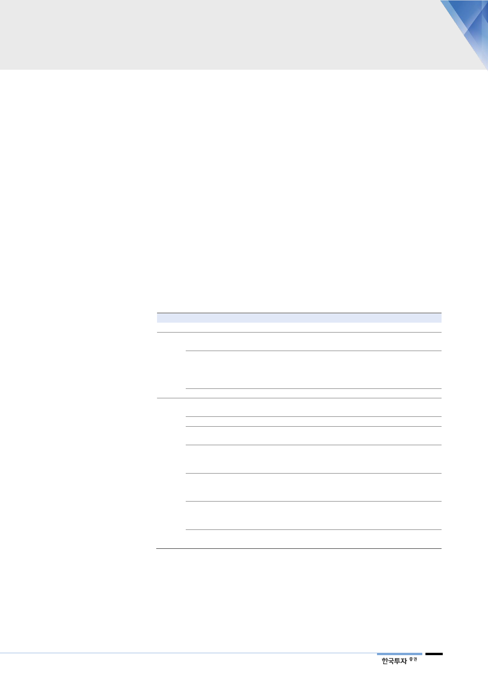

전기요금 인상
기대하기 어려운 상황
현재로서는 원전이용률
회복이 먼저
반면 전기요금을 올리기 어려운 상황이다. 석탄이나 LNG 가격은 기업이 통제 못
하는 외부변수이기 때문에, 이를 요금에 얼마나 효과적으로 반영할 수 있는지는
유틸리티 업종 투자의 중요한 기준이 된다. 특히 전기요금은 원가보다 비탄력적
으로 움직이기 때문에 주가에 미치는 영향이 더 크다. 소비자에게 받는 전기요금
은 원가와 적정투자보수를 보장하도록 산정하는 것이 원칙이지만, 물가안정 등
공익을 위해 비용부담이 바로 반영되지 못하는 경우가 많다. 한전은 단기 수익성
보다 대주주가 정부인 공기업으로서의 역할을 먼저 생각할 수밖에 없다.
정부는 원자재 가격의 상승분을 전기요금에 반영할 필요가 있다는 원론적 입장이
다. 다만 에너지 가격은 변동성이 크기 때문에 유가와 석탄가격 상승에 맞춰 매번
전기요금을 조정하기를 기대하기 어렵다. 최근 물가 상승과 경기 부진에 대한 우
려가 커지는 점도 요금 인상에 걸림돌이 될 것이다. 정부는 10년 만에 유류세를
인하하는 방안을 추진하는 등 소비 촉진과 물가 안정화에 더 신경쓰고 있다. 산업
용 경부하 요금 조정에 대한 논의가 이어져 왔지만, 비용부담 전가보다는 형평성
제고 차원에서 추진될 가능성이 높으며, 이마저도 내년으로 미뤄질 것이다.
<표 10> 전기요금에 대해 다양한 논의가 진행 중이지만…
일자
2016년
2017년
12월
7월
10월
2018년
12월
4월
5월
6월
7월
8월
9월
10월
주요 내용
주택용 누진제 조정. 기존 6단계에서 3단계로 축소
백운규 전 산업부 장관, 인사청문회에서 원료 가격 변동 없다는 가정 아래
탈원전에 따른 전기요금 인상분은 앞으로 5년간 제한적일 것이라 예상
백운규 전 산업부 장관, 국정감사에서 2022년까지 전력 수급 전망 고려했을 때
탈원전으로 인한 전기요금 인상은 없을 것이라 전망
조환익 전 한국전력 사장, 2022년까지 전력수급 요인만으로 요금 인상요인 크지 않아
한전이 감당 가능한 수준이라 답변
8차 전력수급기본계획, 산업용 경부하 요금 등 전기요금 체계 전반적으로 개편할 방침
김종갑 한국전력 사장, 취임 직후 악화된 재무구조 개선 위해 비상경영체제를 선언
요금체계 합리화를 경영목표의 일환으로 언급
백운규 전 산업부 장관, 한전의 적자는 일시적으로 전기요금 인상요인 제한적이라 언급
박원주 산업부 에너지자원실장, 산업용 전기요금 개편에 대해 검토 중이라 밝힘
김종갑 한국전력 사장, 산업용 경부하 요금 조정과 연료비 연동제 도입 필요성 언급
김종갑 한국전력 사장, “수입 콩값이 올라갈 때도 두부가격을 올리지 않았더니 이제는
두부가격이 콩값보다 더 싸다”면서 전기요금 인상 필요성을 시사
백운규 산업부 장관, 산업용 경부하 전기요금 인상 시점 내년으로 늦출 방침이라 밝힘
정부, 주택용 전기요금 누진제 7~8월 완화 포함된 ‘폭염에 따른 전기요금 지원 대책’ 발표
백운규 산업부 장관, 누진제 폐지에 대해 신중한 입장 피력
산업부, 하반기 주택용 누진제 및 산업용 경부하 요금인상 등에 대해 논의할 방침
심재철 자유한국당 의원, 주택용 전기요금 누진제 완화하고 원가를 공개하는 내용의
‘전기사업법 일부개정법률안’을 국회에 제출
성윤모 산업부 장관, 인사청문회에서 산업용 경부하 요금 조정 필요하다고 밝힘
성윤모 산업부 장관, 국정감사에서 전기요금은 원가와 함께 국민경제에 미치는 영향 등
종합적으로 고려해 결정되며, 현재 이를 적절히 반영하고 있다고 언급
자료: 언론자료, 한국투자증권
전기요금 개편에 대한 기대감은 장기적으로 유효하다고 판단한다. 향후 신재생에
너지, 스마트그리드, ESS 등 투자부담이 커질수록 연료비연동제와 같은 요금 정
상화의 당위성은 높아질 전망이다. 다만 단기적으로는 커지는 원가부담을 전기요
금에 반영할 수 있는 시점에 대해 예단하기 어렵다. 결국 상대적으로 통제 가능한
원전이용률의 정상화로 수익성을 회복시키려는 노력이 먼저 드러날 전망이다.
25